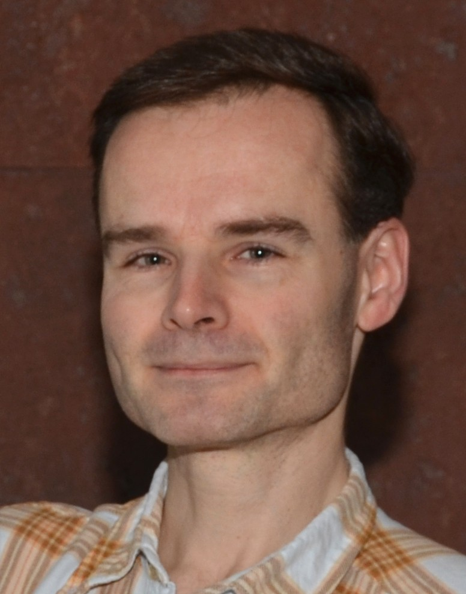

Marek Petrik
Born in Prague,
Czechoslovakia.
Primary
school in Prague and Marburg.
High school
in Marburg.
Materials
sciences studies, Technical University of Darmstadt.
PhD work
and employment as scientific assistant, Philipps-
Universitaet, Marburg.
Talks at Conferences and
Colloquia
Thematic classification:
*N - nanochemistry; *H -
historiography; *S - sphere packings.
1. Magnetische
Momente in nanokristallinem Nickeloxid, Hirschegg-Seminar 2007 -- an international colloquium on
inorganic and solid state chemistry, Hirschegg,
Kleinwalsertal, Austria, June 7-9, 2007.
*N
2. Nanomagnetismus von Nickeloxid, 4.
Materialforschungstag Mittelhessen 2008, meeting organized
by the Materials Sciences Center WZMW, Philipps-Universitaet, Marburg,
Germany, June 20, 2008.
*N
3. Size- and Shape-Controlled Nanomagnetism of NiO, SSC2008 -- 8th International
Conference on Solid State Chemistry (IUPAC-Sponsored),
Bratislava, Slovakia, July 6-11, 2008.
*N (Abstract: ref. [A4].)
4. Nanomagnetismus von NiO (full talk), Current Research in Inorganic
Chemistry, colloquium at the department of chemistry,
Philipps-Universitaet, Marburg, Germany, February 2, 2009.
*N
5. Ultrafine nc-NiO -- a Néel-Type Random Ferrimagnet?, DPG Spring Meeting 2009 (German
Physical Society DPG), Technical University of Dresden,
Dresden, Germany, March 22-27, 2009.
*N (Abstract: ref. [A6].)
6. nc-NiO -- Skalierungsgesetze, Hirschegg-Seminar 2009 -- an
international colloquium on inorganic and solid state chemistry, Hirschegg,
Kleinwalsertal, Austria, June 11-13, 2009.
*N
7. NiO, ultrafein, HAEKO
2010 -- an international conference on inorganic and solid state
chemistry, Max Planck Institute for Solid State Research,
Stuttgart, Germany, March 4-6, 2010.
*N
8. NiO-Nanometrik, Hirschegg-Seminar 2010 -- an
international colloquium on inorganic and solid state chemistry, Hirschegg,
Kleinwalsertal, Austria, June 3-5, 2010.
*N
9. Half a
Century of Nanoantiferromagnetism: Richardson's Phenomenon and Néel's
Models, SCTE 2010 --
International Conference on Solid Compounds of Transition Elements,
Annecy, France, September 5-10, 2010.
*N (Formed part of
ref. [A10].)
10. Magnetic Anisotropy Anomalies of nc-NiO, FKC10 -- 15th international conference on solid state chemistry and materials
research (meeting of the corresponding division of the German Chemical
Society GDCh), Technical University of Berlin, Berlin,
Germany, September 20-22, 2010.
*N (Contents
of ref. [A9].)
11. Anisotropes nc-NiO: Ist der Ordnungsvektor in Ordnung?, HAEKO 2011 -- an international
conference on inorganic and solid state chemistry,
Max Planck Institute for Chemical Physics of Solid Substances and
Technical University of Dresden, Dresden, Germany, March
10-12, 2011.
*N
12. Die Geschichte vom kleinen NiO, HAEKO 2012 -- an international
conference on inorganic and solid state chemistry, Carl von Ossietzky
University, Oldenburg, Germany, March 8-10, 2012.
*N (An unabridged
annotated version may be found in ref. [B9].)
13. NiO voellig aufgeloest, HAEKO 2013 -- an international
conference on inorganic and solid state chemistry, Albert Ludwigs
University, Freiburg i. Br., Germany, March 7-9, 2013.
*N
14.
Warum heisst Bunsenit Bunsenit -- Mineralogie und Kristallographie von
einst im Licht heutiger Nanoforschung (DGK 2013 - 1/2), DGK 2013 -- 21st Annual
Conference of the German Crystallographic Society DGK,
Technical University
Bergakademie of Freiberg, Freiberg (Saxony), Germany,
March 19-22, 2013.
*H (Abstract: ref.
[A17].)
15. Dissolution Kinetics of Nanocrystals -- New Insights (DGK 2013 - 2/2), DGK 2013 -- 21st Annual
Conference of the German Crystallographic Society DGK,
Technical University Bergakademie
of Freiberg, Freiberg (Saxony), Germany, March 19-22, 2013.
*N (Abstract: ref.
[A18].)
16. Beta-Mangan -- ins Netz gegangen, HAEKO 2014 -- an international
conference on inorganic and solid state chemistry, University of Cologne,
Cologne, Germany, March 6-8, 2014.
*S
17. The Log-Normal Particle Size Distribution -- A Fingerprint of
Coalescent Grain Growth at the Nanoscale?, E-MRS Spring Meeting 2014
(European Materials Research Society E-MRS), Lille Grand
Palais, Lille, France, May 26-30, 2014.
*N
18. Eine neue Kugelpackung, isopunktuell zu Beta-Mangan und dem
Laves-Netz, FKC14 -- 17th international conference on solid state chemistry and materials
research (meeting of the corresponding division of the German Chemical
Society GDCh), Technical University of
Dresden, Dresden, Germany, September 15-17, 2014.
*S (Contents of ref.
[A20].)
19. Biography -- Nanoscience Meets Historiography, 10th ICHC (10th International
Conference on the History of Chemistry, EuCheMS working party on the
history of chemistry), Universidade de Aveiro, Aveiro,
Portugal, September 9-12, 2015.
*H (Abstract: ref.
[A21].)
20. Nano-NiO?, HAEKO 2016 -- an international
conference on inorganic and solid state chemistry, University of Karlsruhe
- Karlsruhe Institute of Technology KIT, Karlsruhe, Germany, March
17-19, 2016.
*N
21.
Gesucht: Packungen von Kugelpackungen -- packen wir's
an!, HAEKO 2017 -- an international
conference on inorganic and solid state chemistry, University of Augsburg,
Augsburg, Germany, March 16-18, 2017.
*S (Reproduced in part
in ref. [C3].)
22.
Herring's Scaling Law of Diffusion
Revisited, ACCGE-21 -- 21st American
Conference on Crystal Growth and Epitaxy (AACG -- American Association for
Crystal Growth), Santa Fe, New Mexico,
USA, July 30-August 4, 2017.
*N
23. Diskret, HAEKO 2018 -- an international
conference on inorganic and solid state chemistry, University of Leipzig,
Leipzig, Germany, March 8-10, 2018.
*N
24. Packings of Sphere Packings -- Pushing Ahead, DGK 2019 -- 27th Annual
Conference of the German Crystallographic Society DGK, University of Leipzig,
Leipzig, Germany, March 25-28, 2019.
*S (Abstract: ref.
[A24].)
|

Photograph
by Ellen
Thun, press
office, Philipps-Universitaet,
Marburg.
|